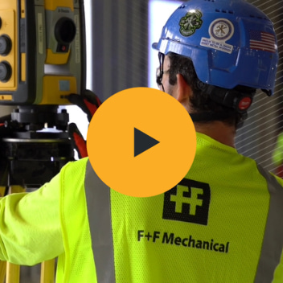

Construction
Turn ideas into innovation
Trimble empowers customers to drive productivity and progress with connected hardware and software solutions. Turn to Trimble and close the gap.
What we do
Trimble connected solutions give you a better way to work. Whether you design and construct buildings, operate and maintain infrastructure, optimize global supply chains or map the world, Trimble keeps your projects moving.
Turn ideas into innovation
Turn spatial data into decisions
Turn slowdowns into solutions
Turn roadblocks into runways
Turn sustainability into success
Driven by relentless innovation in precise positioning, 3D modeling and data analytics, Trimble empowers customers worldwide to succeed. With focused growth in construction, geospatial and transportation, the numbers speak for themselves.
Work doesn't flow in a straight line.
Every day brings new turns—decisions, actions and adjustments that must be made in real time. With Trimble on your team, you're in command of connected solutions to make every turn with confidence. Time after time, end to end, to keep work flowing.
Sports partnerships
Our partnerships with RFK Racing and Liverpool Football Club showcase how high-stakes competition runs on the same connected technology our customers use to engineer success and win with Confidence at every turn™.
Customer stories
Every day, Trimble customers are advancing the potential of technology to connect people, data and workflows. Learn how they're achieving remarkable success through the power of the Trimble ecosystem.
By standardizing workflows and empowering teams with connected data, JE Dunn is redefining what’s possible — building smarter, more efficiently, and with precision that sets a new industry benchmark.
See it in actionStrategic insights
From operational precision to connected workflows and real-time agility, explore the innovative thinking industry leaders are applying to today’s challenges and tomorrow’s opportunities.
Innovation in action
Trimble is working with Adobe, NVIDIA, Pixar and others to build a model future for interoperability.

Discover how F+F Mechanical streamlines workflows and improves work-life balance with our connected solutions.
Mark Schwartz shares how Trimble AI solves real-world problems and enables unprecedented productivity gains.
Our partners
Leveraging the depth and breadth of Trimble intelligence and technology, our global community of partners is unlocking new ways to turn their solutions into your success.